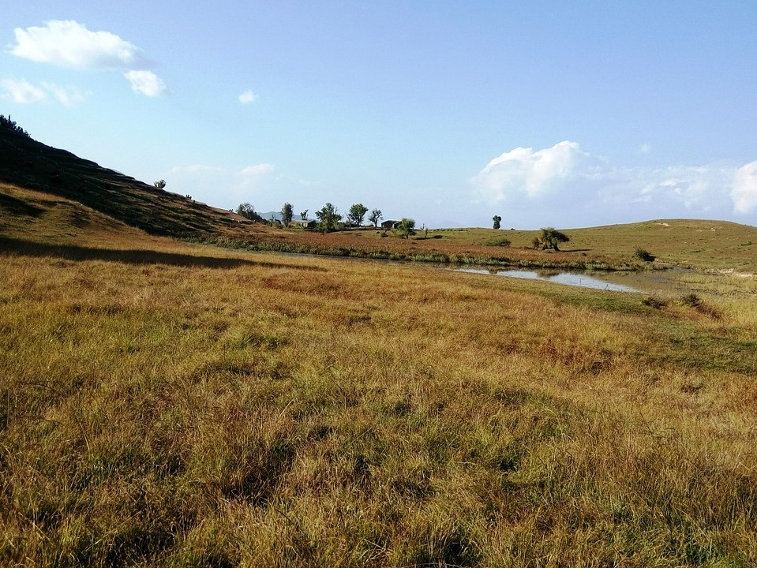
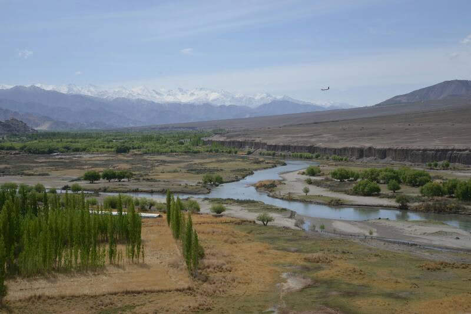

And the Writer's ink spilled onto the Reader's pages.......
Here are some pictures from my travels. And with it some words that were inspired by these places
If I could choose a muse from nature that could hold me captivated forever, I would say, without a second thought, the grasslands high up in the Himalayas.
Have you ever experienced solitude- not the kind that weighs you down, but the one that holds you close and makes you feel like you can talk to the silence?
That is what the open stretch of grass, cradled between the mountain tops means to me.
This vast expanse of grass means freedom to be whoever you want to be simply because there is no one to stop you.
It means immortality; a place where time runs at its own pace, isolated from the rest of the world.
It means unimaginable beauty, in the ever-changing landscape of the sky.
It means quiet companionship - of the swaying golden grass and the frosty breeze- without any expectations.
A world beyond our own, reminding us, there is beauty in simplicity.
A world that shows us the true power of resilience; a silent world of plenty hidden within the rugged cliffs, the majestic Himalayan peaks, the desolate terrain, the frigid white winters, the unpredictable weather, and tumultuous and unrelenting wind.
A source of life for all the inhabitants of the mountains. A shelter from the elements.
If a thing of such beauty, such resilience, doesn’t awaken the writer in you, pray, what does?
Midwinter Memories
It is the 31st of December, 2017. Night has fallen.
We tread barefoot on a narrow sandy path towards the open ocean – five friends and a cumbersome pile of firewood (held in my arms).
The brambles give way to warm dry sand of the Kapu Beach, Udupi. Faint strains of music can be heard from a distant party.
Quietly chatting, we walk down to the water's edge and after some kerfuffle, we set up a fire.
The Arabian Sea is calm tonight.
The waves break a few feet from us, foaming, whispering the song of the ocean.
A warm ocean breeze brings in spoondrift. The Kapu Beach lighthouse lights up the sky above us every few minutes.
The Mangalore port twinkles in the distance, busy with ships.
As the countdown for new year begins we stop talking.
The fire has died down to embers. We lie back on the sand, staring up to the moonless heavens.
The endless canvas of the Gods is covered by a myriad of stars, the beauty bewitching. 3, 2, 1 … fireworks are set off from a party, two rockets lighting up the sky.
As we wish each other, we all know that there will never be a more wonderful start to a year.
Edge of the road tumbled down- far below into the open valley that we overlooked. A litle brook wound its way across the open plain,
a sandy beach creeping up it sides. The were no people around, only crystal clear water sparkling in the morning sunlight and a few lone trees.
And in the distance, the Himalayas watched, faded behind the clouds. The scene reminded me of the word of Alfred Lord Tennyson
"I slip, I slide, I gloom, I glance,
Among my skimming swallows;
I make the netted sunbeam dance
Against my sandy shallows.
I murmur under moon and stars
In brambly wildernesses;
I linger by my shingly bars;
I loiter round my cresses;
And out again I curve and flow
To join the brimming river,
For men may come and men may go,
But I go on for ever."